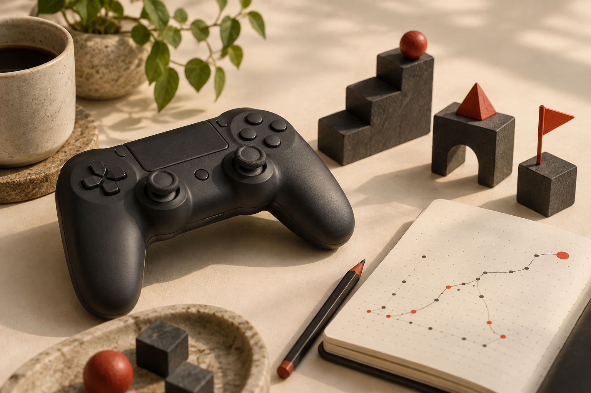
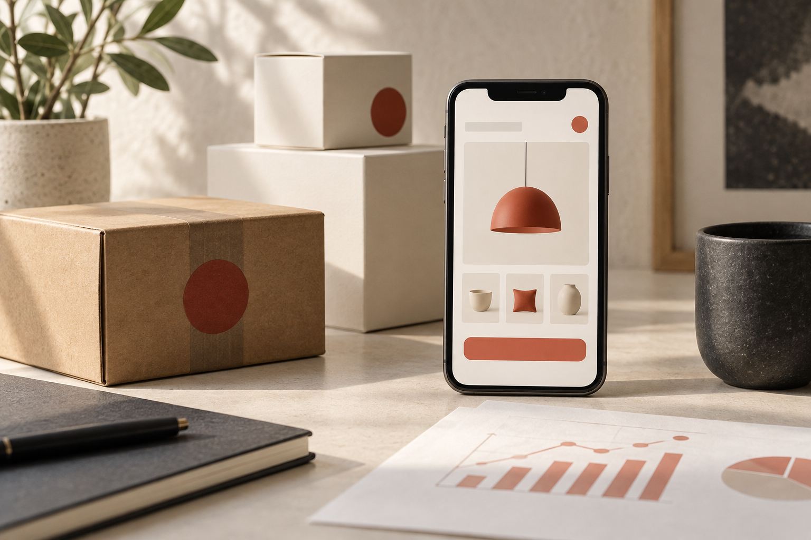

국내 사례에 더해 해외 게임의 플레이 테스트·텔레메트리와 해외 커머스의 개인화 검색 실험을 별도로 확인했습니다.
Quick read
이번 호 핵심 요약
아래의 확인된 사실은 제공된 원문 조사 결과를 요약한 내용이고, 주홍색 세로선 옆의 분석가 관점은 사실과 구분한 해석용 질문입니다. 기사와 채용 정보는 모두 확인일 기준이며 변동될 수 있습니다.
A/B 테스트(두 안을 나눠 비교하는 실험), 지표, 데이터 품질을 통해 의사결정에 연결하는 흐름이 보입니다.
게임 데이터 전 과정을 다루는 컴투스홀딩스 데이터분석가 공고를 새로 확인했습니다. KT알파 쇼핑 공고는 명시된 10월 6일 00:00 마감 시각이 지나 활성 목록에서 제외했으며, 현재 활성 공고는 9건입니다.
Work cases
국내외 게임·커머스 데이터 활용 사례 7건
국내 자료를 먼저 배치하고 해외 자료는 별도 구역으로 나눴습니다. 최근 3개월을 우선 조사하고 부족한 범위는 최근 1년까지 넓혔으며, AWS/HARMA 사례는 1년 초과 직무 참고자료로 유지했습니다.

01 / DOMESTIC GAME
국내 게임 · 플레이를 이해하는 데이터
이용자는 어디에서 머물고, 어느 단계에서 어려움을 느낄까요? 국내 게임 분야의 두 사례입니다.
게임1년 초과 · 직무 참고자료2025. 02. 27.
HARMA/AWS · 로그, ETL, 스테이지 난이도 분석
- 확인된 사실
HARMA와 AWS의 공개 자료는 게임 로그, ETL(Extract·Transform·Load: 데이터를 꺼내고 정리해 옮기는 과정), 스테이지 난이도 분석을 다뤘습니다.
- 분석 방법·지표
게임 로그 · ETL · 스테이지 난이도 분석
분석가 관점의 질문
어떤 구간에서 이용자가 어려움을 겪는지, 로그가 빠짐없이 기록됐는지 어떻게 함께 확인할까요?- 확인하지 못한 점
제공된 조사 결과에서는 분석 대상 규모, 난이도 판단 기준, 개선 전후 수치를 확인하지 못했습니다.
- AWS 직무 참고자료 원문 열기 (새 창)
게임 · 업무 사례2026. 03. 12.
NC · A/B 테스트, UA, ROAS 프로세스
- 확인된 사실
NC의 2026년 3월 12일 공개 자료에는 A/B 테스트, UA(User Acquisition·사용자 확보), ROAS(Return On Ad Spend·광고비 대비 매출) 프로세스가 제시됐습니다.
- 분석 방법·지표
A/B 테스트 · UA · ROAS
분석가 관점의 질문
어떤 사용자 집단과 기간을 비교해야 광고 효율 차이를 판단할 수 있을까요?- 확인하지 못한 점
제공된 조사 결과에서는 실험 표본, 기간, ROAS 산식과 결과 수치를 확인하지 못했습니다.
- NC 업무 사례 원문 열기 (새 창)

02 / DOMESTIC COMMERCE
국내 커머스 · 선택을 이해하는 데이터
추천부터 배송까지, 고객 경험 속에서 분석의 역할을 찾아보세요.
커머스 · 업무 사례2025. 11. 26.
컬리 · 개인화 추천의 온라인 A/B 테스트
- 확인된 사실
컬리의 공개 자료는 개인화 추천과 온라인 A/B 테스트를 다루며 ATC(Add To Cart·장바구니 담기), ARPU(사용자 1명당 평균 매출), CTR(클릭률)을 지표로 제시했습니다.
- 분석 방법·지표
온라인 A/B 테스트 · ATC · ARPU · CTR
분석가 관점의 질문
클릭률 변화가 장바구니와 사용자당 매출에도 같은 방향으로 이어지는지 어떻게 판단할까요?- 확인하지 못한 점
제공된 조사 결과에서는 표본 크기, 실험 기간, 각 지표의 변화량을 확인하지 못했습니다.
- 컬리 추천 사례 원문 열기 (새 창)
커머스 · 업무 사례2026. 04. 23.
당근 · 데이터 조직과 지표 플랫폼
- 확인된 사실
당근 데이터 팀의 공개 글은 BigQuery, 지표 플랫폼, 실험, 데이터 계보를 다뤘습니다. 데이터 계보는 데이터가 어디서 왔고 어떤 과정을 거쳤는지 추적하는 정보입니다.
- 분석 방법·지표
BigQuery · 지표 플랫폼 · 실험 · 데이터 계보
분석가 관점의 질문
여러 팀이 같은 지표를 다르게 해석하지 않도록 정의·변경 이력을 어떻게 관리할까요?- 확인하지 못한 점
제공된 조사 결과에서는 플랫폼 적용 범위, 사용자 수, 실험의 개별 결과를 확인하지 못했습니다.
- 당근 데이터 조직 원문 열기 (새 창)
커머스 · 업무 사례2026. 04. 28.
컬리 · 이미지 기반 오배송 탐지
- 확인된 사실
컬리의 공개 자료는 이미지와 GPS, 대조학습을 활용한 오배송 탐지를 다뤘습니다. 대조학습은 서로 비슷하거나 다른 사례를 비교해 구별 기준을 배우는 방식입니다.
- 분석 방법·지표
이미지 · GPS · 대조학습 · Accuracy(전체 정확도) · Precision(맞다고 판정한 것의 정확도) · Recall(실제 대상을 찾아낸 비율) · F1 · AUC
분석가 관점의 질문
놓치면 안 되는 오배송과 잘못 경보를 내는 비용 사이에서 어떤 지표를 우선할까요?- 확인하지 못한 점
제공된 조사 결과에서는 학습 데이터 규모, 기준값, 실제 운영 성과를 확인하지 못했습니다.
- 컬리 오배송 탐지 원문 열기 (새 창)
03 / GLOBAL GAME
해외 게임 · 플레이 테스트를 데이터로 연결하기
정성 피드백과 플레이 행동 기록을 함께 보며 개발 판단으로 연결한 사례입니다.
해외 게임 · 업무 사례2026. 06. 12.
Microsoft XBOX · 영상·설문·텔레메트리 기반 플레이 테스트
- 확인된 사실
XBOX 공식 글은 최신 Doom 출시 전 내부 직원과 약 60명의 외부 게이머를 대상으로 매주 플레이 테스트를 진행하고, 플레이 영상·설문·텔레메트리를 연결해 이용자가 막히는 지점을 살폈다고 설명합니다.
- 분석 방법·지표
대상자 분리 배포(flighting) · 플레이 영상 · 화면 캡처 · 설문 · 행동 텔레메트리 · 일일 버그 리포트
분석가 관점의 질문
“길을 잃었다”는 발화와 실제 이동·실패 로그를 어떤 시간축으로 연결하면 레벨 개선 우선순위를 정할 수 있을까요?- 확인하지 못한 점
공개 글에서는 해당 Doom 테스트가 최종 지표나 레벨 설계에 미친 정량 변화는 공개하지 않았습니다.
- XBOX 플레이 테스트 원문 열기 (새 창)
04 / GLOBAL COMMERCE
해외 커머스 · 고객 여정으로 검색을 개인화하기
장기 예약 이력과 최근 탐색 행동을 결합하고 온라인 실험으로 검증한 사례입니다.
해외 커머스 · 업무 사례2026. 07. 21.
Airbnb · 고객 여정 시퀀스로 검색 개인화
- 확인된 사실
Airbnb는 과거 7년의 예약·리뷰·취소와 최근 21일의 숙소 조회를 두 시퀀스로 나누고 Transformer 기반 검색 순위 모델에 반영했습니다. 보통 3주간 온라인 A/B 테스트를 거쳐 안전 지표와 사업 지표를 함께 확인했습니다.
- 분석 방법·지표
장기 80개·단기 200개 이벤트 · Transformer · NDCG · 3주 A/B 테스트 · 예약자·숙박일·조회·이메일 클릭
분석가 관점의 질문
최근 탐색과 장기 선호를 각각 추가했을 때 예약 전환 기여도를 어떻게 분리하고, 안전 지표 악화를 어떻게 막을까요?- 확인된 결과
오프라인 NDCG는 단계 합계 3.78% 개선됐고, 단기 시퀀스 추가 뒤 온라인에서 미취소 예약자 0.55%, 미취소 숙박일 0.82%, 조회 0.90%가 증가했습니다. 같은 임베딩을 이메일 순위에 적용했을 때 클릭은 5.04% 증가했습니다.
- Airbnb 검색 개인화 원문 열기 (새 창)
Open roles
현재 확인된 국내 활성 채용 9건
명시된 마감일이 가까운 순으로 먼저 배치하고 상시·채용 시 마감 공고를 뒤에 두었습니다. 2026년 10월 6일 09시 기준 원문에서 지원 버튼과 모집 상태를 다시 확인했습니다.
게임
기어세컨드 · 데이터 분석가
- 등록
- 2026. 09. 16.
- 마감
- 2026. 11. 15. · 채용 시 조기마감
- 업무
- 유저 액션 로그·데이터 파이프라인 설계, 게임 전 수명주기 데이터 분석, KPI·가설 정의와 A/B 테스트, 대시보드·리포트 작성
- 필수
- SQL 데이터 추출·정제, Python·SQL·BI 도구, A/B 테스트 설계, 패턴 모델링
- 우대
- 모바일 게임 분석, AWS·GCP·Snowflake 경험
- 관련성
- 게임 행동 로그를 실제 프로덕트 개선과 유저 경험 고도화로 연결하는 분석 직무입니다.
- 확인
- 2026. 10. 06. 잡코리아 원문에서 11월 15일 마감과 모집 상태 확인
게임
컴투스홀딩스 · 데이터분석가
- 등록
- 2026. 09. 21.
- 마감
- 2026. 11. 20. · 채용 시 조기마감
- 업무
- 인게임·마케팅·소셜 데이터 수집과 지표화, 로그 설계, 대시보드·데이터 마트 관리, 서비스 개선 분석
- 필수
- 데이터 분석 경력 4년 이상, 수학·통계·알고리즘 이해, SQL 기반 ETL·데이터 가공, Python·R 등 분석 도구
- 우대
- 게임 이용 경험, 가설 수립부터 데이터 가공·결론 도출까지 수행한 경험
- 관련성
- 게임 행동·마케팅 데이터를 지표와 가설로 바꾸고 결과를 서비스 개선에 연결하는 데이터 분석 직무입니다.
- 확인
- 2026. 10. 06. 잡코리아 공고에서 11월 20일 마감, 홈페이지 지원과 모집 상태 확인
확인 한계 보기
공식 상세 원문은 검색 결과에서 확보하지 못해 기업 공고를 구체적으로 연결하고 홈페이지 지원을 제공하는 채용 플랫폼 원문으로 확인했습니다.
게임
넵튠 · 하이브리드캐주얼1팀 데이터 분석가(DA)
- 등록
- 2026. 09. 23.
- 마감
- 2026. 11. 22. · 기업 사정에 따라 변경 가능
- 업무
- 핵심 지표·로그와 분석 환경 설계, 리포트 자동화, A/B 테스트·세그먼트·이탈·병목 분석, 게임 경제·레벨·광고/IAP 수익화 인사이트 제공
- 필수
- SQL, 퍼널 설계·타깃 정의, 통계적 가설 수립과 설명, 게임 운영·수익화 이해
- 우대
- 퍼즐 게임 분석, Metabase, 글로벌 게임 데이터 분석 경험
- 관련성
- 플레이 행동과 수익화 데이터를 실험·지표 개선으로 연결하는 게임 데이터 분석 직무입니다.
- 확인
- 2026. 10. 06. 잡코리아 원문에서 11월 22일 마감과 모집 상태 확인
확인 한계 보기
세부 업무와 역량은 기업 공고를 구체적으로 연결하는 채용 플랫폼의 텍스트 원문으로 교차 확인했습니다.
게임
네오플 · 전략분석실 데이터분석가
- 등록
- 2026. 08. 18.
- 마감
- 채용 시 마감
- 업무
- 게임 지표·유저 데이터 분석과 인사이트 보고, AI를 활용한 탐색·예측·분석 자동화, 분석 주제 정의
- 필수
- SQL·Python·Excel 기반 대용량 데이터 가공·추출·분석·리포팅, 유저 맥락 해석, 협업·설득
- 우대
- 네오플 서비스 게임을 좋아한 경험
- 관련성
- 게임 지표와 유저 행동을 직접 분석해 기획·개발 조직의 판단을 지원합니다.
- 확인
- 2026. 10. 06. 인크루트 공고에서 채용 시 마감과 홈페이지 지원 표시 확인
확인 한계 보기
공식 상세 페이지는 검색 결과에서 확보하지 못해 기업 공고를 구체적으로 연결하는 채용 플랫폼 원문으로 교차 확인했습니다.
커머스
무신사 · Product Data Analyst (Data Intelligence)
- 등록
- 확인 불가
- 마감
- 상시지원 · 우수 인재 채용 시 마감
- 업무
- 무신사·29CM 고객 행동 분석, App·Web 로그 파이프라인 설계, 성공·안정성 지표 정의, 퍼널·경로 분석과 결과 자산화
- 필수
- 고객 행동 또는 프로덕트 분석 7년 이상, Amplitude·Google Analytics, Databricks(Spark), SQL 성능 최적화
- 우대
- A/B 테스트 설계·통계적 유의성 검증, 로그 구조·행동 흐름 설계, AI Agent 기반 분석 자동화
- 관련성
- 패션 커머스의 고객 행동과 실험 결과를 제품 경험 개선으로 연결하는 Product Data Analyst 직무입니다.
- 확인
- 2026. 10. 06. 공식 채용 목록과 상세 원문에서 지원하기 버튼과 상시지원 안내 확인
커머스
CJ올리브영 · Data Analyst(분석)
- 등록
- 확인 불가
- 마감
- 명시일 없음 · 지원 버튼 활성
- 업무
- 프로모션·상품·고객·카테고리·채널·글로벌 과제 분석, 가설 수립부터 실행 과제 도출, 반복 분석 자동화
- 필수
- SQL·Python, 분석 실무 5년 이상, 비즈니스 과제 구조화, 결과 커뮤니케이션
- 우대
- 이커머스·리테일·플랫폼 경험, 고객 세그먼트·프로모션 효과·상품 성장 분석, 인과추론
- 관련성
- 온·오프라인 커머스 사업 질문을 End-to-End 분석으로 실행 과제에 연결합니다.
- 확인
- 2026. 10. 06. 공식 원문에서 지원하기 버튼과 직무 상세 확인
커머스
CJ올리브영 · Product Data Analyst
- 등록
- 확인 불가
- 마감
- 명시일 없음 · 지원 버튼 활성
- 업무
- 프로덕트 문제·가설 정의, A/B 테스트와 성과 평가, 핵심·건전성 지표 및 데이터 마트 설계, 대시보드·이상 징후 분석
- 필수
- B2C 분석·엔지니어링 경력 3년 이상, SQL·Python, 실험 해석, Tableau·Amplitude·Mixpanel 등 PA/BI 도구
- 우대
- 500만 MAU 이상 커머스 분석, 로그 설계부터 개선까지의 전체 과정, AI 기반 생산성 개선
- 관련성
- 사용자 행동과 실험 결과를 실제 프로덕트 개선으로 연결하는 커머스 Product DA입니다.
- 확인
- 2026. 10. 06. 09:00 공식 원문에서 직무 상세와 지원하기 버튼 확인
커머스
토스 · Data Analyst (Commerce Ads Platform)
- 등록
- 확인 불가
- 마감
- 명시일 없음 · 지원하기 버튼 활성
- 업무
- 광고 입찰·과금 로직과 예산 소진 분석, 캠페인·소재·지면별 ROAS 측정, 가설·실험·결과 분석, CTR·CVR·광고 매출 지표 체계 설계
- 필수
- SQL, 사용자 행동 분석과 전략 제안, A/B 테스트 설계·검증 경험
- 우대
- 입찰·과금·예산 소진·랭킹 로직을 비즈니스 관점에서 평가한 경험
- 관련성
- 토스쇼핑 광고의 효율과 사용자 탐색 경험을 실험과 수익 지표로 함께 최적화하는 커머스 분석 직무입니다.
- 확인
- 2026. 10. 06. 09:00 공식 원문에서 직무 상세와 지원하기 버튼 확인
커머스
캐치테이블 · Product Data Analyst
- 등록
- 확인 불가
- 마감
- 수시채용 · 합격자 발생 시 조기마감
- 업무
- 예약·대기·탐색 행동 데이터 정제·가공·적재, 퍼널·코호트·리텐션 분석, 지표 설계와 대시보드 운영
- 필수
- SQL·Python, 분석 실무 5년 이상, BI 도구, CLV·리텐션·코호트 분석 이해
- 우대
- Snowflake·BigQuery, 실시간 스트리밍, 품질 검증 자동화, MLOps 경험
- 관련성
- 외식 예약 커머스의 사용자 행동과 실험을 실제 제품 성장으로 연결하는 Product DA입니다.
- 확인
- 2026. 10. 06. 공식 원문에서 지원하기 버튼과 수시채용 안내 확인
Common signals
활성 공고 9건에서 자주 나온 역량
아래 출현 수는 2026년 10월 6일 09시 모집 상태를 확인한 공고 9건만으로 다시 계산했습니다. 같은 단어라도 필수·우대의 요구 강도는 공고마다 다릅니다.
사용자 행동·서비스 지표
이용자 행동이나 서비스·사업 흐름을 지표로 정의하고 해석하는 업무가 9건 모두에서 확인됐습니다.
SQL
필요한 데이터를 꺼내고 결합하는 질의 언어로 현재 활성 공고 9건 모두에서 언급됐습니다.
Python 또는 R
분석·자동화·재현 가능한 코드 작성 도구로 6건에서 확인됐습니다.
문서화·리포팅·협업
대시보드·리포트·재현 문서 또는 유관 조직과의 협업 표현이 7건에서 확인됐습니다.
통계·실험·AI·ML 관련 표현
통계 분석, A/B 테스트, 머신러닝, AI 자동화 가운데 하나 이상이 9건 모두에 있으나 요구 깊이는 다릅니다.
게임·커머스 도메인 이해
해당 서비스의 이용자·사업 맥락 경험이 우대 또는 업무 이해 요소로 8건에서 확인됐습니다.
Compare
게임과 커머스, 무엇을 다르게 볼까요?
아래 표는 이번 업무 사례와 공고에서 보이는 초점의 차이를 읽기 쉽게 정리한 것입니다. 업계 전체의 확정적 기준은 아닙니다.
| 비교 기준 | 게임 | 커머스 |
|---|---|---|
| 주요 맥락 | 사용자 확보, 광고 효율, 플레이 로그, 레벨 경험, 게임 경제·수익화 | 추천·검색, 구매 퍼널, 고객 세분화, 광고 입찰·ROAS, 재구매·이탈 |
| 사례의 방법 | A/B 테스트, UA·ROAS, 행동 로그, 영상·설문·텔레메트리 결합 | 온라인 A/B 테스트, 시퀀스 모델, 코호트·리텐션, 이미지·GPS, 지표 플랫폼 |
| 공고 진입 단서 | 기어세컨드·네오플은 경력무관 또는 신입 지원 가능 표현이 있고, 넵튠은 경력 3년 이상, 컴투스홀딩스는 4년 이상을 요구합니다. | 올리브영 Product DA는 경력 3년 이상, 기존 올리브영·캐치테이블은 5년 이상, 무신사는 7년 이상이며 토스는 경력 연수를 명시하지 않았습니다. |
Starter path
신입·전환 준비자, 이 순서로 시작해 보세요
아래 순서는 공고의 공통 표현과 업무 사례를 연결한 준비 제안입니다. 사실 정보가 아닌 분석가 관점의 제안입니다.
SQL로 질문에 답하기
한 가지 이용자·고객 질문을 정하고 필요한 데이터를 추출해 보세요.
Python 또는 R로 정리하기
데이터를 정제하고, 요약값과 시각화를 만들어 보세요.
행동·서비스 지표 읽기
클릭·장바구니·매출 또는 게임 플레이 흐름을 지표로 정의해 보세요.
작은 실험 설계하기
비교할 집단, 기간, 성공 기준을 적어 A/B 테스트 흐름을 연습하세요.
한 장으로 설명하기
문제 → 방법 → 결과 → 다음 행동 순서로 보고서나 포트폴리오를 만드세요.
Read with caution
확인하지 못한 점과 원문 링크
조사 한계
- 채용 표본 9건은 국내 게임·커머스 데이터 분석 채용 시장 전체를 대표하지 않습니다.
- 기어세컨드·컴투스홀딩스·네오플·넵튠은 공식 상세 원문을 검색 결과에서 확보하지 못해 기업 공고를 구체적으로 연결하는 채용 플랫폼에서 모집 상태와 내용을 교차 확인했습니다.
- 모집 상태는 2026년 10월 6일 09시 확인 결과이며, 상시·채용 시 마감 공고는 지원 직전 원문을 다시 확인해야 합니다.
- KT알파 쇼핑 Data Analyst 공고는 공식 페이지의 명시 마감 시각인 2026년 10월 6일 00:00이 지나 활성 목록에서 제외했습니다.
- 무신사 공고는 공식 원문에 등록일이 표시되지 않아 확인 불가로 적었습니다.
- 오버데어 Data Analyst는 공식 상세 주소가 현재 채용 목록으로 이동하고 해당 직무가 목록에서 사라져 활성 목록에서 제외했습니다.
- 크래프톤 Jr. 시선 데이터 분석 연구원은 공식 상세 주소가 채용 목록으로 이동하고 해당 직무가 목록에서 사라져 활성 목록에서 제외했습니다.
- 토스 공고는 공식 원문에 경력 연수·등록일·근무지가 명시되지 않아 확인 불가로 표시했습니다.
- 공개 원문에 표본·기간·산식이나 정량 결과가 없으면 각 사례 카드에 확인하지 못한 점으로 표시했습니다.
이 페이지의 핵심 원문 링크는 업무 사례 7개와 채용 공고 9개, 총 16개입니다. 같은 발표와 동일 공고 링크는 중복 집계하지 않았습니다.